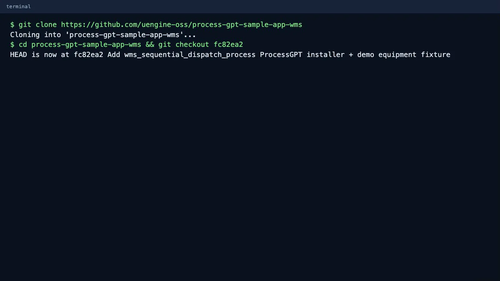
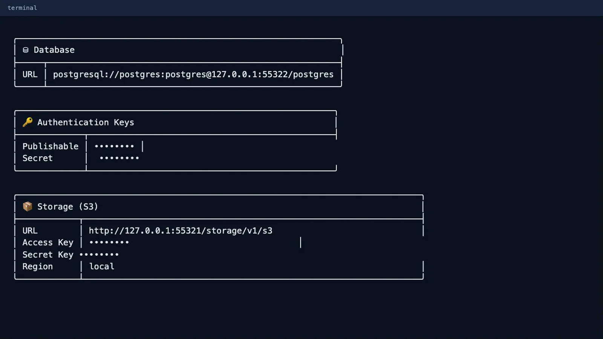
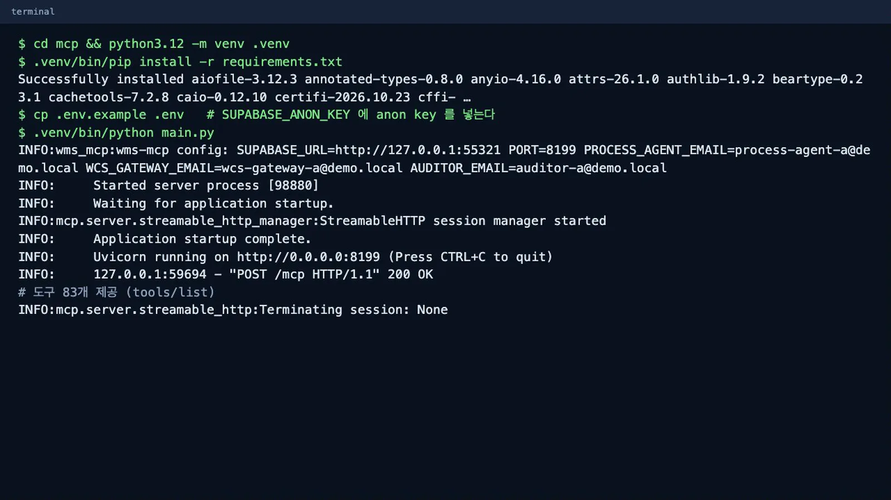
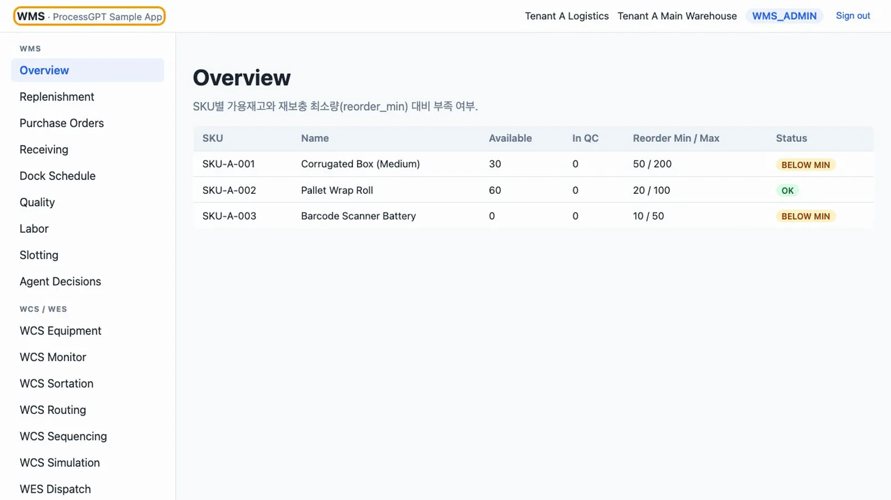
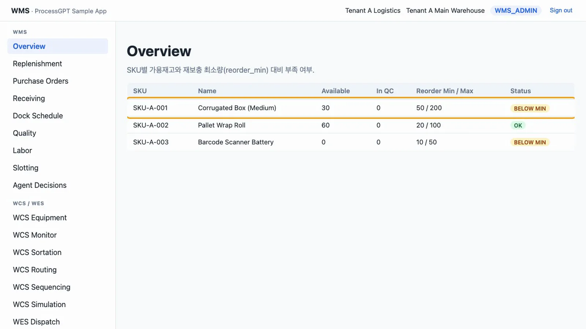
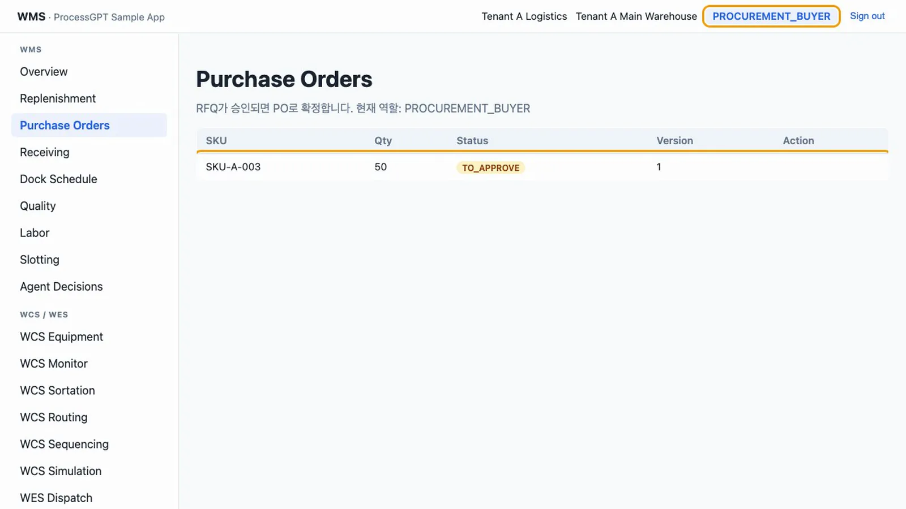
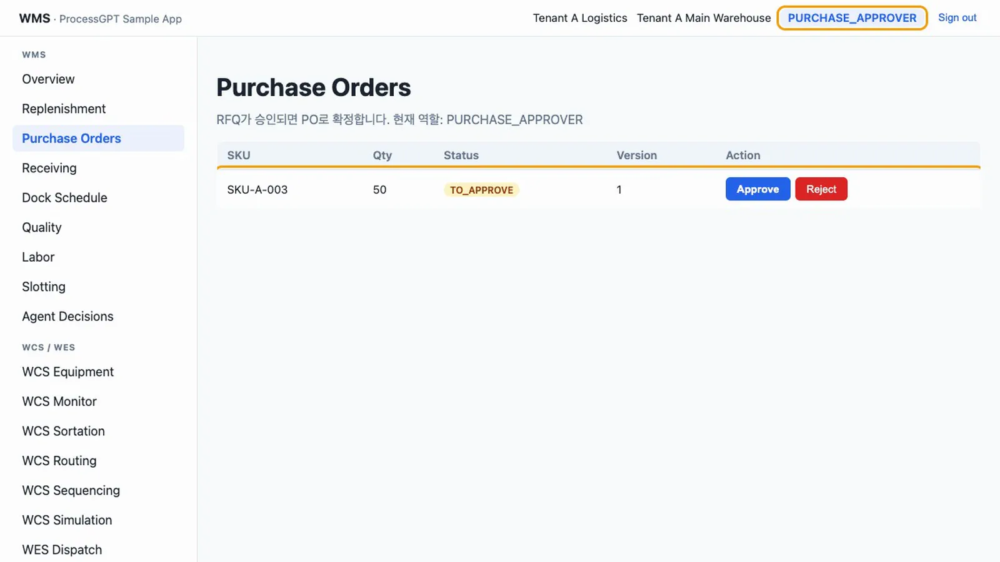
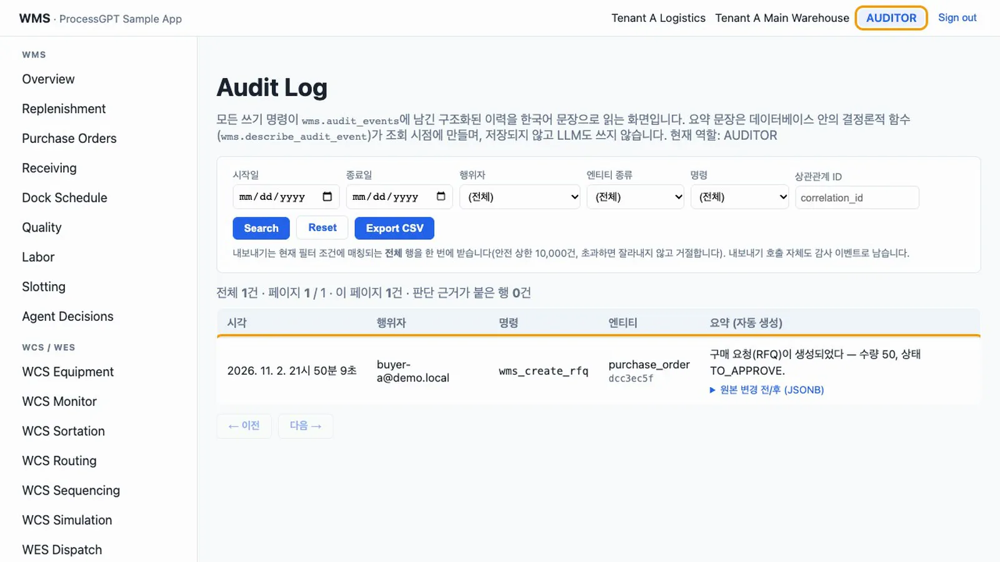
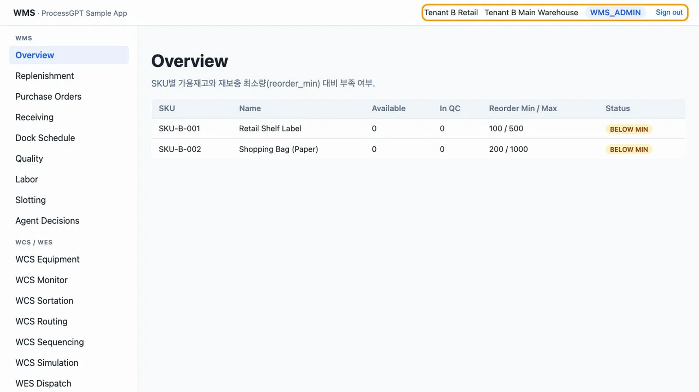

uEngine WMS를 공개 저장소에서 받아 직접 설치하고, 로그인해서 메뉴와 역할별 차이, 테넌트 격리를 확인합니다.
무엇을 · 왜#
uEngine WMS는 재고 부족에서 구매, 입고, 품질, 적치까지 이어지는 창고 업무와 자동화 설비 제어를 한 앱에서 보여 주는 Process GPT 샘플 앱입니다. Supabase(Postgres, 인증, 행 수준 보안), MCP 서버, Vue 3 화면으로 구성되어 있고, 소스는 공개 저장소에 있습니다. 화면 왼쪽 위에도 WMS · ProcessGPT Sample App이라고 적혀 있습니다.
먼저 알아 둘 것
- 데모 규모입니다. 저장소의
docs/01-baseline-scope.md가 정한 기준은 테넌트 2개, 테넌트당 창고 1~2개, 동시 현장 사용자 5명 이하이고, 가용성 목표(SLA)는 없습니다. 시드 데이터는 상품 5개, 공급사 3곳, 계정 11개입니다. - 운영 실적이나 고객사, 성능 수치를 제시하는 자료가 아닙니다. 실제 고객에 적용하려면 재고평가 방식, 공급사 협업 채널, 출고 원천 같은 항목을 다시 정해야 합니다.
- 다국어 UI는 목표가 아닙니다. 버튼과 표 머리글은 영어, 설명 문장은 한국어입니다. 이 튜토리얼도 버튼 이름을 화면에 나온 그대로 씁니다.
- 실제 설비는 없습니다. 설비 쪽 응답은 게이트웨이 계정이나 시뮬레이터 워커가 보냅니다.
- 커밋을
fc82ea2로 고정합니다. 현재 main으로 새로 설치하면 실패합니다.wms.warehouses.tenant_id가text인데wms.tenants.id는uuid여서 외래 키를 만들지 못합니다.
이 샘플이 다루는 영역과 다루지 않는 영역입니다.
| 영역 | 내용 | 메뉴 |
|---|---|---|
| 구매·입고 | 재고 부족, RFQ, 승인, PO, 도착, 입고, 품질, 폐기, 적치 | Overview, Replenishment, Purchase Orders, Receiving, Quality |
| 야드·인력·슬로팅 | 도크 예약과 차량 이동, 작업 계측, 재배치 추천 | Dock Schedule, Labor, Slotting |
| 설비 제어(WCS) | 설비 등록, 명령, 장애, 분류기, 병목, 서열 출고, 시뮬레이션 | WCS Equipment, Monitor, Sortation, Routing, Sequencing, Simulation |
| 작업 지시(WES) | 웨이브, 업무 오더 | WES Dispatch |
| 에이전트·감독 | 에이전트 제안 검토, 한국어 감사 로그 | Agent Decisions, Audit Log |
| 다루지 않음 | 총계정원장·세무·급여, CRM, 제조 MRP, TMS 배차 최적화, PLC 저수준 제어, 수요예측 ML | — |
이 튜토리얼은 다음 순서로 진행합니다.
| 장 | 내용 |
|---|---|
| 시작하기 | 설치, 로그인, 역할 (이 장) |
| 재보충에서 적치까지 | 부족 → RFQ → 승인 → PO → 입고 → 품질 → 적치, 불합격 폐기 |
| 작업 지시와 설비 제어 | 설비 명령, 장애, 웨이브, 분류기, 병목 회피 |
| 서열 출고와 시뮬레이션 | 팔레타이징, 시뮬레이터 워커, 가정 시나리오 |
| Process GPT 연동 | MCP 도구, 재보충 프로세스 실행, 에이전트 제안 검토, 감사 로그 |
따라 하기#
준비물은 Docker(Colima나 Docker Desktop), Supabase CLI, Node.js, Python 3.10 이상입니다. 이 튜토리얼은 macOS, Supabase CLI 2.75, Python 3.12로 실행했습니다.
- 저장소 내려받기와 커밋 고정. 저장소를 내려받고
fc82ea2로 옮깁니다.git clone https://github.com/uengine-oss/process-gpt-sample-app-wms cd process-gpt-sample-app-wms && git checkout fc82ea2
저장소 받기 - Supabase 시작. Docker가 실행 중인 상태에서 실행합니다. 마이그레이션 12개와 시드 데이터가 한 번에 적용됩니다. 처음에는 이미지를 받느라 몇 분 걸립니다. API는
http://127.0.0.1:55321, DB는55322번입니다.cd supabase && supabase start
Supabase 시작 - 공개 키 확인. 프런트엔드와 MCP 서버의
.env에 넣을 공개 키를 확인합니다.supabase status -o env | grep ANON_KEY - 프런트엔드 실행.
.env의VITE_SUPABASE_ANON_KEY에 위 값을 넣습니다. 주소는http://localhost:5273입니다.cd ../frontend && npm install && cp .env.example .env npm run dev - MCP 서버 실행. 새 터미널에서 실행합니다. 맥 기본
python3(3.9)로 만든 가상 환경에서는fastmcp를 찾지 못해pip install이 실패합니다. 3.10 이상으로 가상 환경을 만드세요..env의SUPABASE_ANON_KEY에 같은 값을 넣습니다. 포트는8199입니다.cd mcp && python3.12 -m venv .venv .venv/bin/pip install -r requirements.txt cp .env.example .env .venv/bin/python main.py
MCP 서버 실행 - 로그인. 브라우저에서
http://localhost:5273을 열고admin-a@demo.local/Demo1234!로 로그인합니다. 데모 계정의 비밀번호는 모두 같습니다.
로그인 직후 - Overview 보기. 상품 3개의 재고가 보입니다.
SKU-A-001은 Available 30, Reorder Min 50이라BELOW MIN입니다.SKU-A-002는 60으로OK,SKU-A-003은 0으로BELOW MIN입니다.
Overview - 메뉴 세 묶음. 왼쪽 메뉴는 WMS(구매·입고 문서와 현장 관리), WCS / WES(자동화 설비), Oversight(감사 로그)로 나뉩니다.
- 구매 담당자로 들어가기. Sign out을 누른 뒤
buyer-a@demo.local로 로그인합니다. 오른쪽 위 역할이PROCUREMENT_BUYER로 바뀌고, Audit Log 메뉴가 없습니다. 승인 대기 문서가 있어도 Purchase Orders에 Approve 버튼이 없습니다.
구매 담당자 화면 - 구매 승인자로 들어가기.
approver-a@demo.local로 로그인합니다. 같은 문서에 Approve와 Reject가 나타납니다. 만드는 사람과 승인하는 사람이 나뉘어 있고, 화면뿐 아니라 데이터베이스 함수도 역할을 검사합니다.
구매 승인자 화면 - 감사 담당자로 들어가기.
auditor-a@demo.local로 로그인해 Audit Log를 엽니다. 쓰기 명령마다 남은 이력이 한국어 문장으로 보입니다. 이 계정은 읽기만 할 수 있습니다.
감사 로그 - 다른 테넌트 확인.
admin-b@demo.local로 로그인합니다.Tenant B Retail의SKU-B-001,SKU-B-002만 보이고 테넌트 A의 상품은 보이지 않습니다.
테넌트 B
계정은 모두 @demo.local, 비밀번호는 Demo1234!입니다.
| 계정 | 역할 | 주로 하는 일 |
|---|---|---|
admin-a |
WMS_ADMIN | 테넌트 A 관리, 감사 로그 |
buyer-a |
PROCUREMENT_BUYER | RFQ 생성, PO 확정 |
approver-a |
PURCHASE_APPROVER | 구매 승인·반려 |
inbound-a |
INBOUND_OPERATOR | 도착·입고 등록, 적치, 도크 예약 |
quality-a |
QUALITY_INSPECTOR | 품질 판정, 폐기 |
wh-manager-a |
WAREHOUSE_MANAGER | 설비 등록, 명령, 웨이브, 제안 검토 |
wcs-operator-a |
WCS_OPERATOR | 설비 명령, 장애 해소 |
wcs-gateway-a |
WCS_GATEWAY | 설비 쪽 보고용 서비스 계정(화면에서 쓰지 않음) |
process-agent-a |
PROCESS_AGENT | MCP 서버가 에이전트 대신 쓰는 계정 |
auditor-a |
AUDITOR | 감사 로그 읽기와 내보내기만 |
admin-b |
WMS_ADMIN | 테넌트 B 관리(격리 확인용) |
확인 문제#
왜 최신 main이 아니라 fc82ea2로 설치하나요?
main은 wms.warehouses.tenant_id를 text로 만들면서 uuid인 wms.tenants.id를 참조해 마이그레이션이 실패합니다. fc82ea2는 처음부터 설치가 끝까지 되는 것을 확인한 커밋입니다.
구매 담당자에게 Approve 버튼이 없는데, 주소를 직접 입력하거나 함수를 직접 호출하면 승인할 수 있나요?
할 수 없습니다. 화면에서 버튼을 숨기고, 데이터베이스 함수에서 역할을 검사해 실제로 권한을 통제합니다. 권한이 없는 역할이 호출하면 FORBIDDEN 오류가 납니다.
이 앱을 그대로 운영에 써도 되나요?
그런 목적의 앱이 아닙니다. 흐름을 끝까지 확인하기 위한 데모 규모의 샘플이고, SLA와 부하 검증이 없으며 실제 설비에 연결되어 있지 않습니다.